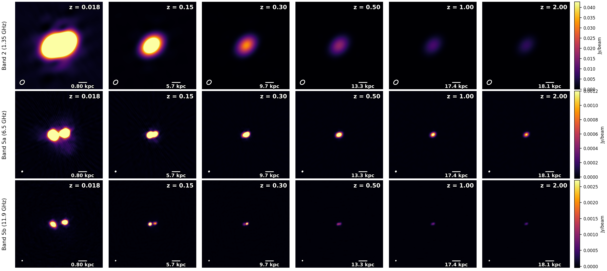

Science motivation
Arp 220 is the nearest ultra-luminous infrared galaxy and one of the brightest nearby radio sources. Its compact merger-driven starburst structure makes it a natural local template for high-redshift radio galaxies. Here the same resolved model is rescaled using luminosity distance, angular-diameter distance, K-correction (α = −0.7) and a Schreiber+15 star-forming main-sequence evolution, then observed by SKA-MID-AA* in bands 2, 5a and 5b.
Simulation runs
Telescope
- Array
- SKA-MID-AA*
- Mode
- Continuum snapshot
Observation
- Snapshot length
- 10 minutes
- Bands
- 1.35, 6.5 & 11.9 GHz
Input model
- Source
- Arp 220 recentered
- Format
- FITS image model (Jy/pixel)
Scaling
- Redshift range
- 0.018 → 2.0
- Spectral index α
- −0.7
- SFR model
- Schreiber+15
Results
All three bands cover the same field of view. The source becomes smaller and fainter together; higher-frequency bands resolve the two nuclei better at low redshift, but also fade faster as redshift increases.

Takeaways
- Size evolution: the apparent angular diameter shrinks with redshift as θ ∝ DA−1.
- Flux evolution: luminosity-distance dimming and K-correction dominate; the higher-frequency bands fade faster.
- Morphology: the double nucleus resolved at z = 0.018 is still separable at z = 0.15 in bands 5a and 5b, blends by z = 0.5, and disappears by z = 2.0.